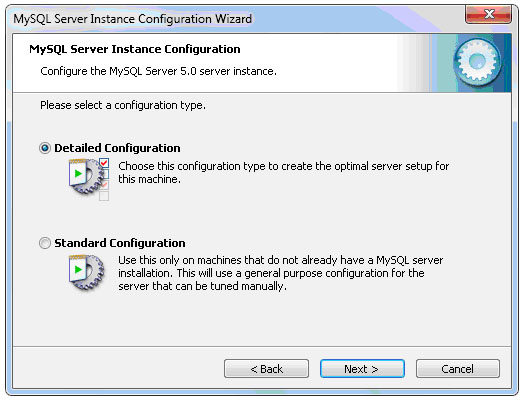
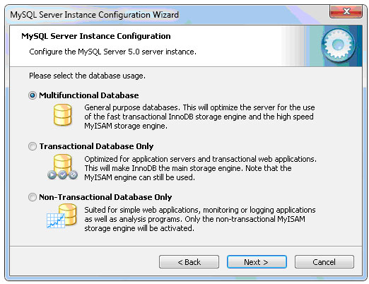
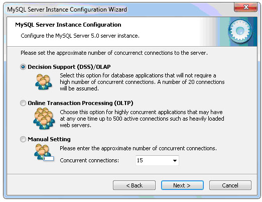

ПРАКТИЧЕСКАЯ РАБОТА №8. УСТАНОВКА И НАСТРОЙКА СУБД MY SQL
1. ЦЕЛЬ И ЗАДАЧИ РАБОТЫ
Целью работы является получение практических навыков установки и настройки СУБД MeSQL.
2. КРАТКИЕ ТЕОРЕТИЧЕСКИЕ СВЕДЕНИЯ
MySQL – свободная реляционная система управления базами данных. Разработку и поддержку MySQL осуществляет корпорация Oracle. Продукт распространяется как под GNU General Public License, так и под собственной коммерческой лицензией. Помимо этого, разработчики создают функциональность по заказу лицензионных пользователей. Именно благодаря такому заказу почти в самых ранних версиях появился механизм репликации.
MySQL является решением для малых и средних приложений. Входит в состав серверов WAMP, AppServ, LAMP и в портативные сборки серверов Денвер, XAMPP, VertrigoServ. Обычно MySQL используется в качестве сервера, к которому обращаются локальные или удалѐнные клиенты, однако в дистрибутив входит библиотека внутреннего сервера, позволяющая включать MySQL в автономные программы.
MySQL портирована на большое количество платформ: FreeBSDLinux, macOS, NetBSD, OpenBSD, OS/2 Warp, Solaris, SunOS, Windows 95 – Windows 7 и Windows 10.
На официальном сайте СУБД для свободной загрузки предоставляются не только исходные коды, но и откомпилированные и оптимизированные под конкретные операционные системы готовые исполняемые модули СУБД MySQL.
Источник для установки
https://dev.mysql.com/downloads/installer/.
3. ПОРЯДОК ВЫПОЛНЕНИЯ РАБОТЫ
Установка MySQL
Для установки MySQL нужно распаковать скачанный архив и запустить файл Setup.exe.
Чтобы начать установку нужно нажать кнопку Next.
Рисунок 1
Выберем выборочную установку – Custom
Рисунок 2
Выберем компоненты, необходимые для установки, или оставим все по умолчанию. Каталог установки сервера также можно оставить без изменений.
Рисунок 3
После этого для установки сервера нужно нажать Install.
Рисунок 4
Выбрав пункт Skip Sing-Up, отклоняем предложение зарегистрироваться и нажимаем кнопку Next.
Рисунок 5
Отметим, что настройка сервера MySQL сервера будет произведена сразу, и нажмем Finish.
Рисунок 6
Запустим утилиту настройки MySQL сервера.
Выберем первый пункт Детальная конфигурация – Detailed Configuration.

Рисунок 7
Выберем пункт Машина разработчика – Developer Machine и нажмем кнопку Next.
Рисунок 8
Далее укажем тип таблиц, который будет назначен по умолчанию. Выберем Многофункциональную базу данных – Multifunctional Database.

Рисунок 9
Укажем диск и папку для хранения данных из таблиц InnoDB. Выберем диск, который имеет фaйловую систему NTFS и достаточный объем свободного пространства (рекомендуется около 1 Гб).
Рисунок 10
Укажем число пользователей, которые смогут одновременно выполнять подключение к серверу. Остановимся на пункте Decision Support (DSS). Число подключений ограничено 20.

Рисунок 11
Отметим поддержку TCP/IP соединений и укажем номер порта 3306 – через него будет происходить связь с сервером.
Обратим внимание, что опцию Enable Strict Mode рекомендуется оставлять включенной.
Рисунок 12
Далее выберем ручной выбор кодировки, которая используется по умолчанию – пункт Manual Selected Default Character Set / Collation, и укажем cp1251 – соответствует Cyrillic Windows.
Рисунок 13
Чтобы MySQL сервер запускался как служба Windows, рекомендуется отметить пункт Install As Windows Service.
Теперь укажем имя сервиса – Service Name: MySQL – оставим по умолчанию (в случае, если не установлена другая версия MySQL).
Поле Launch the MySQL Server automatically используется для запуска сервера MySQL в автоматическом режиме при старте системы.
Если планируется запуск сервера вручную, нужно снять галочку. Отметим пункт Include Bin Directory in Windows PATH, чтобы PHP смог найти необходимые для него файлы MySQL.
Рисунок 14
По умолчанию программа установки создает пользователя root с правами администратора, для которого вводим пароль и подтверждаем его.
Поле Enable root access from remote machines используется для подключения к базе данных удаленно с правами администратора root.
Рисунок 15
Для создания конфигурации нажимаем Execute.
Рисунок 16
Процесс установки успешно завершен.
Настройка сервера
Для корректного отображения русских букв выполним настройку сервера для данной кодировки и способа сравнения данных в БД.
Приступим к настройке файла конфигурации my.ini, который можно найти по следующему пути:
C:\Program Files\MySQL\MySQL Server 5.0\my.ini.
В разделе [client] ниже строки port=3306 добавим такую строку:
character-sets-dir="C:/Program Files/MySQL/MySQL Server5.0/share/charsets"
Строка указывает путь к папке, которая содержит файлы конфигурации, позволяющие MySQL работать с разными кодировками.
В разделе [mysqld] ниже строки port=3306 добавим такие строки:
Первая строка описывалась выше, а две последние выполняют принудительную установку кодировки cp1251 для всех запросов.
Найдем строку: default-storage-engine=INNODB
Заменим одну из основных систем хранения данных в MySQL INNODB на MYISAM: default-storage-engine=MYISAM
Настройка файла конфигурации my.ini завершена.
Необходимо сохранить изменения и закрыть его.
4. ЗАДАНИЕ
Заданием для практической работы является установка и настройка экземпляра сервера на домашнем компьютере. И подготовка отчѐта о настройке.
5. КОНТРОЛЬНЫЕ ВОПРОСЫ
1. Какова область применения сервера MY SQL?
2. Где можно взять компоненты для установки сервера MY SQL?
3. Какие этапы установки можно выделить?
4. Какие параметры установки необходимо задать?
5. На какой порт необходимо настраивать установку сервера MY SQL?
6. Что такое пользователь «Root»?